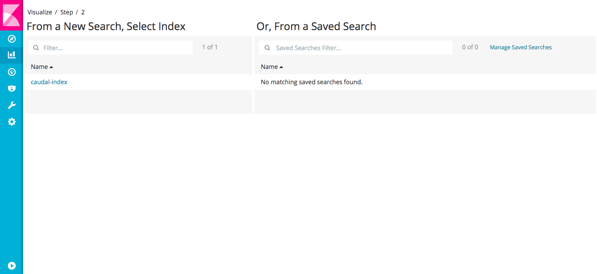
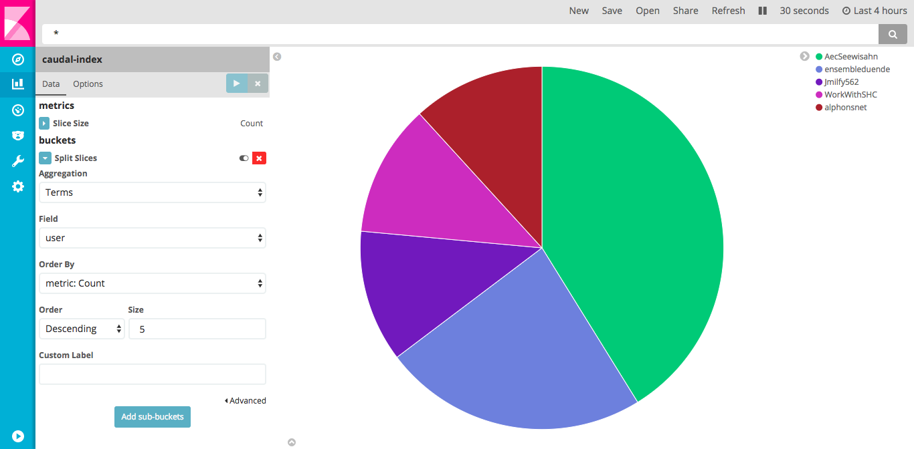

Caudal ofrece integración con un amplio conjunto de herramientas.
Requerimientos
Elasticsearch
Caudal, como procesador de transmisión en memoria, no tiene un mecanismo interno para almacenar eventos atómicamente. Elasticsearch podría ser útil en escenarios donde necesitamos buscar y extraer informes históricos.
A continuación, proponemos un ejercicio para meter eventos extraídos desde Twitter a Elasticsearch y extraer informes a través de Kibana:

Configuración
Escribe la siguiente configuración en el directorio config/ y disfruta los comentarios:;; Requires
(ns caudal.example.tcp
(:require
[mx.interware.caudal.io.elastic :refer :all]
[mx.interware.caudal.io.rest-server :refer :all]
[mx.interware.caudal.streams.common :refer :all]
[mx.interware.caudal.streams.stateful :refer :all]
[mx.interware.caudal.streams.stateless :refer :all]))
;; Listeners
(deflistener twitter [{:type 'mx.interware.caudal.io.twitter
:parameters {:name "MyCaudalExample"
:consumer-key "CoNsuMerKey"
:consumer-secret "CoNsUmErSeCrEt"
:token "00000000-AcCeSsToKeN"
:token-secret "AcCeSsToKeNsEcReT"
:terms ["selfie" "beach" "travel"]}}])
;; Reduce una gran cantidad de datos del evento de twitter entrante
;; Busca los tweets con geolocalizacion habilitada y sin respuestas ni citas.
(defn prune-data [event]
(let [{:keys [coordinates user text in_reply_to_screen_name is_quote_status in_reply_to_status_id_str]} event
[lon lat] (:coordinates coordinates)]
(if-not (and in_reply_to_screen_name is_quote_status in_reply_to_status_id_str)
(if coordinates
{:user (:screen_name user)
:text text
:coordinates (str lat "," lon)}
(clojure.tools.logging/warn {:prune "no coordinates"}))
(clojure.tools.logging/warn {:prune "reply"}))))
;; Sinks
(let [es-url "http://localhost:9200" ;; elasticsearch url
es-mapping-name "caudal-mapping" ;; mapping name
es-index-name "caudal-index" ;; index name
es-mapping {es-mapping-name {:properties {:user {:type "string" :index "not_analyzed"} ;; Does not analize :user
:timestamp {:type "date" :format "epoch_millis"} ;; Takes :timestamp in millis
:coordinates {:type "geo_point"} ;; Takes :coordinates as lat,lon
}}}
es-store-fn (elastic-store! [es-url es-index-name es-mapping-name es-mapping {}])]
(defsink example 1 ;; backpressure
(smap [prune-data]
(time-stampit[:timestamp]
(->INFO [:all]
es-store-fn)))))
;; Wire
(wire [twitter] [example])
Descarga e inicia Elasticsearch antes de iniciar Caudal:$ wget https://artifacts.elastic.co/downloads/elasticsearch/elasticsearch-5.2.2.tar.gz
$ tar xzvf elasticsearch-5.2.2.tar.gz
$ cd elasticsearch-5.2.2
$ bin/elasticsearch
Verifica la conectividad al puerto 9200 de Elasticsearch usando curl:$ curl http://localhost:9200
{
"name" : "bdbqlra",
"cluster_name" : "elasticsearch",
"cluster_uuid" : "hjpH9C0USPOiSno8b2yNqA",
"version" : {
"number" : "5.2.2",
"build_hash" : "f9d9b74",
"build_date" : "2017-02-24T17:26:45.835Z",
"build_snapshot" : false,
"lucene_version" : "6.4.1"
},
"tagline" : "You Know, for Search"
}
Inicia Caudal pasando el archivo de configuración:$ bin/caudal -c config/twitter-elastic.clj start
```
Verifica el contenido de Elasticsearch:$ curl -XPOST 'localhost:9200/caudal-index/_search?pretty' -d '{"query": { "match_all": {} }}'
Kibana
Para crear visualizaciones e informes, necesitamos instalar y ejecutar Kibana:$ wget https://artifacts.elastic.co/downloads/kibana/kibana-5.2.2-linux-x86_64.tar.gz
$ tar xzvf kibana-5.2.2-linux-x86_64
$ cd kibana-5.2.2-darwin-x86_64/
$ bin/kibana
Abre la url http://localhost:5601 en un navegador y haz clic en Settings.
En la ventana de Configure an index pattern agrega como index caudal-indexy selecciona timestamp como el nombre del Time-field, y después haz clic en Create:

Ahora, haz clic en el botón Discovery (en la parte superior de la barra lateral), debe ser una línea de tiempo con los eventos entrantes:

Visualizaciones
Tile map
Crear una visualización para eventos es bastante fácil, en la barra lateral haz clic en Visualización. En esta pantalla, busca en la columna Crear nueva visualización para Tile map y haz clic:

En Step 2 selecciona caudal-index en la columna From a New Search, Select Index:

En la ventana de Tile map, en las opciones de datos, haz clic en Geo coordinates. Selecciona la agregación Geohash ycoordinates como campo. Haz clic en el botón Reproducir y el mapa se actualizará con puntos de clúster mediante los tweets geolocalizados:

Guarda tu visualización usando el botón Guardar.
Pie chart
Haz clic en el botón Visualizar hasta que pueda ver Create new Visualization luego busca una Pie chart. Nuevamente en el Step 2 selecciona caudal-index en la columna From a New Search, Select Index.
En la pantalla de la gráfica de sectores, haz clic en Split Slices usando Términos como agregación y usuario como campo. Esta gráfica muestra los cinco twiteros con más posts:

Guarda tu gráfica dando clic en el boton guardar.
Dashboards
Kibana proveé Dashboards como un mecanismo para agrupar varias visualizaciones en una sola pantalla.
Haz clic en el botón Dashboard en la barra lateral:

Haz clic en el botón Add para seleccionar visualizaciones guardadas previamente:
Puedes agregar la visualización a la pantalla y personalizar su tamaño y orden:

Los filtro seleccionados en una visualización son propagados al Dashboard entero: